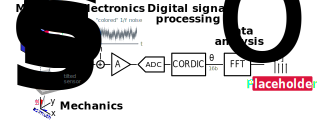

Example: readout chain¶
{kind=link}
Common packages
Numpy and scipy core scientfic lib
Pandas dataframe tubular data manipulation (input / output variables for the model and analysis).
Excellent packages for plotting. Holoview and hvplot interactive tie directly to dataframe
Panel dashboard
# Common package
import numpy as np
import scipy
import pandas as pd
import hvplot.pandas
import holoviews as hv
import panel as pn
pn.extension()
# Specific to this analyis
from scipy.spatial.transform import Rotation as R
import yaml
from box import Box
#pn.Column("## Title", pd.DataFrame(np.random.randn(100, 2)).cumsum().hvplot())
Overview¶
https://www.msystraining.com/articles/quality-management/dmaic-approach-in-lean-six-sigma/ Measure: quantify the problem, model.
Define.
System under study: magnetic angle sensor. Several components. Objective: quantititevly study the performance angle error in the presence of several errors sources (mech misalignment, noise, and digital calculation approximation) and provide design recommendations to meet a certain accuracy target.
Model: functional modeling in Python. For each component, model the math input/output relationship. Execute these function in turn to model the full chain.
Analysis of the end-to-end angle error by FFT (spectral analysis) to distinguish non linearity distortion and random noise. Repeat for several parameter configurations to gain insight into the critical factors (sensivity analysis).
Improve: Summarize the critial errors, and finally we derive design requirements to meet accuracy target specified in tems of equivalent number of bits (ENOB).
DMAIC. Control phase? Cascading RQT first form of control. Test case, analyzing first batch of data.
Functional Modeling¶
Pandas. Plotting holoview.
Fixed Parameters of the system under study. Stored them in a dedicated data dictionary for better modularity. Data dictionary, design parameters initialize.
dd = {
'magnet' : {
'dim' : [10,10,10],
'mag' : [-1,0,0],
'pos' : [0,0,15] },
'sensor' : {
'pos' : [0,1,0],
'tilt' : 3,
'S' : 1.0,
'noise' : 0.2 },
'adc': {
'lsb' : 0.1,
'n' : 12 },
'cordic' : {
'n' : 12, }
}
#print(yaml.dump(dd, allow_unicode=True, default_flow_style=None))
display(pd.DataFrame.from_dict(dd, orient='index').stack().to_frame('value'))
dd=Box(dd)
Coding convention¶
Convention for each function (series or dataframe in / out) when there are multiple inputs
\(Y = f(X)\).
inputs: X[‘x1’], X[‘x2’], …
outputs: Y[‘y1’], Y[‘y2’] …
Just a convention for consistency. Named output
def f(X):
return {
'cos': np.cos(X.theta_i),
'sin': np.sin(X.theta_i),
}
f(Box({'theta_i': 0}))
def apply_func_df(func):
def wrapper(df):
Y = df.apply(func, axis=1, result_type='expand')
return df.drop(columns=Y.columns, errors='ignore').join(Y)
wrapper.__wrapped__ = func
return wrapper
df = pd.DataFrame({'theta_i': np.arange(0,2*np.pi,np.pi/100)})
@apply_func_df
def f(X):
return {
'cos': np.cos(X.theta_i),
'sin': np.sin(X.theta_i),
}
df=f(df)
display(df)
df.hvplot(x='theta_i')
#from collections import namedtuple
#Point = namedtuple('Point', ['x', 'y']
Magnetics¶
dd.update()
magnetic: magpylib
10x10x10 cube, 1T
Function: (airgap) field vs airgap. Bx, By, Bz, and Bmag.
Dataframe: airgap.
Apply function, expand true Bx, By, Bz and field (vectors)
hvplot Bmag [mT] vs airgap
3 degree, 0.05 rad (5%)
from magpylib.source.magnet import Box as Bar_magnet
magnet=Bar_magnet(**dd.magnet)
display(magnet)
[RaLe09]: R. Ravaud and G. Lemarquand, “Magnetic Field Produced by a Parallelepipedic Magnet of Various and Uniform Polarization,” Pierce Law Rev., vol. 98, pp. 207–219, 2009 [Online]. Available: [link]
https://github.com/magpylib/magpylib/blob/master/magpylib/_lib/fields/PM_Box.py
# Derived parameters
def calc_derived(dd):
dd.magnet.airgap =dd.magnet.pos[2] - dd.magnet.dim[2]
dd.sensor.rot=R.from_euler('y', dd.sensor.tilt, degrees=True)
calc_derived(dd)
df = pd.DataFrame({'z': np.arange(-5,5,0.5)})
@apply_func_df
def calc_B(X):
'Calculate the field vector in mT as a function of z'
B = magnet.getB(np.array(dd.sensor.pos) + np.array([0,0,X.z]))/1e-3
return {'Bx': B[0], 'By': B[1], 'Bz': B[2]}
df=calc_B(df)
df['Bmag']=df.filter(regex='B[x,y,z]').apply(np.linalg.norm, axis=1)
df['airgap']=dd.magnet.airgap - df.z
df.hvplot(x='airgap', y='Bmag',
xlabel='airgap [mm]', ylabel='Field magnitude [mT]'
)
Mechanics¶
df = pd.DataFrame({'theta_i': np.arange(0,360,5)})
@apply_func_df
def calc_B(X):
'Calculate the field vector in mT as a function of rotation'
magnet.rotate(angle=X.theta_i, axis=[0,0,1])
B = magnet.getB(np.array(dd['sensor']['pos']))/1e-3
magnet.angle=0
B=dd['sensor']['rot'].apply(B)
return {'Bx': B[0], 'By': B[1], 'Bz': B[2]}
df=calc_B(df)
df['Bmag']=df.filter(regex='B[x,y,z]').apply(np.linalg.norm, axis=1)
df.hvplot(x='theta_i', y=['Bx', 'By', 'Bmag'],
xlabel='θi [°]', ylabel='Field magnitude [mT]'
)
df.query('theta_i==0')
x,y,z=@np.array([0,0,1]))
print('magnet: ', degrees(np.array(cart2sphere(x,y,z)))[1:])
Offaxis
Field at (0,1mm,-15mm)
Sensor tilted by 3 degree
mechanical (rotation matrix of sensor) from Euler angle
scipy rotation matric, apply
Electronics¶
Sensitivity 1mV/1mT * 1000: 1V/T, Vx, Vy
Then electronic: white noise
from scipy.stats.distributions import norm
norm_dist = norm(0,1)
norm_dist.rvs(size=100)*0.1
@apply_func_df
def transduce(X):
return {
'Vx': (X.Bx + np.random.randn()*dd['sensor']['noise']) * dd['sensor']['S'],
'Vy': (X.By + np.random.randn()*dd['sensor']['noise']) * dd['sensor']['S'],
}
df=transduce(df)
df.hvplot(x='theta_i', y=['Vx', 'Vy'],
xlabel='θi [°]', ylabel='Field magnitude [mT]'
)
%%script echo SKIPPED
def transduce(X):
'B -> to Voltage'
return dd['sensor']['S'] * np.array([X.Bx, X.By]) + np.random.randn(2)
#return dd['sensor']['S'] * (np.array([row.Bx,row.By])
df[['Vx', 'Vy']]=df.filter(regex='B[x-z]').apply(transduce, axis=1, result_type='expand')
N = 10
import colorednoise as cn
beta = 1 # the exponent
samples = 2**N # number of samples to generate
y = pd.Series(cn.powerlaw_psd_gaussian(1, samples))
# optionally plot the Power Spectral Density with Matplotlib
from matplotlib import mlab
from matplotlib import pylab as plt
s, f = mlab.psd(y, NFFT=2**10)
pd.Series(y).hvplot()
https://github.com/felixpatzelt/colorednoise
https://www.dsprelated.com/showarticle/908.php
https://allantools.readthedocs.io/en/latest/functions.html#allantools.noise.pink
Plot white noise, pink noise and total in time time and PSD.
Add different noise to Vx and Vy Plot Vx, Vy.
@apply_func_df
def quantize(X):
def q(v):
return np.clip(int(v/dd.adc.lsb), -2**(dd.adc.n-1), 2**(dd.adc.n-1))
return {'Qx': q(X.Vx), 'Qy': q(X.Vy)}
df=quantize(df)
Digital signal processing¶
‘cordic’ ‘n_bit’: xx
12 bit
digital signal processing: angle calculation (CORDIC, 16b: https://people.sc.fsu.edu/~jburkardt/py_src/cordic/cordic.py)
https://people.sc.fsu.edu/~jburkardt/py_src/cordic/cordic.html
from usys_mod_book import cordic
@apply_func_df
def calc_angle(X):
x,y = X.Qx, X.Qy
angle = cordic.arctan_cordic(x,y,n=dd['cordic']['n'])
# see wikipedia
return {'theta_o': np.degrees(np.sign(x)**2 * angle + (1-np.sign(x))/2*(1+np.sign(y)-np.sign(y)**2)*np.pi)}
df=calc_angle(df)
df.hvplot(x='theta_i', y='theta_o')
Complete chain¶
Chain the operation with pipe: https://pandas.pydata.org/pandas-docs/stable/reference/api/pandas.DataFrame.pipe.html
Stricly pink noise generator has a memory (part of dynamic simulation)
Function operates directly on dataframe.
from IPython.display import Image
Image('figs/_bitmaps/func_pipe.png', width=400)
df = pd.DataFrame({'theta_i': np.arange(0,360,5)})
df=(df.pipe(calc_B)
.pipe(transduce)
.pipe(quantize)
.pipe(calc_angle))
df.hvplot(x='theta_i', y='theta_o')
Analysis¶
Plot angle error, NL error INL at anchor (From Magnetic design app)
repeat for cfg=asis, improved, stack dataframe (N cordic=16)
Summary stats (two columns one per config), Root-mean-square error.
Dashboard summary table, angle error, Bx/By, save as standalone HTML
OPTIONAL:
ENOB analysis, input variable: slow sinewave (dynamic transient are neglected), 3 period 16k points.
Post processing: FFT & ENOB calculation
Plot spectrum
df['theta_err'] = np.unwrap(df.theta_o - df.theta_i, 180)
df['theta_err'] -= df['theta_err'].mean()
g1=df.hvplot(x='theta_i', y='theta_err')
from holoviews import opts
g2=hv.HLine(1).opts(color='red') * hv.HLine(-1).opts(color='red')
g1 * g2
Conclusions¶
Dataframe of parameters Summary statistics (noise, distortion, ENOB)
df.theta_err.describe()[['std', 'max', 'min']].to_frame()